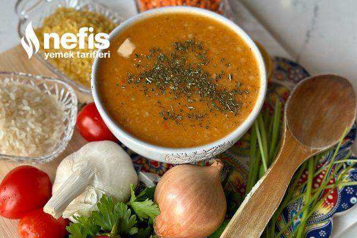

Aşırı Lezzetli Ezogelin Çorbası

Kış günlerinde içinizi ısıtacak lezzet dolu buram buram anadolu kokan çorbamızı en kolay ve pratik haliyle tam kıvamında hazırlayalım.
Tarif:
@Zuhalden
6-8 Kişilik | 10dk hazırlık, 35dk pişirme
Aşırı Lezzetli Ezogelin Çorbası Tarifi İçin Malzemeler
- 1 su bardağı kırmızı mercimek
- 2 yemek kaşığı pirinç
- 2 yemek kaşığı pilavlık bulgur
- 2 orta boy kuru soğan
- 2 diş sarımsak
- 1 yemek kaşığı biber salçası
- Yarım çay bardağı zeytinyağ
- 1 er tatlı kaşığı tuz,pul biber,kuru nane
- 8/10 bardak su
- 1 limonun suyu
Aşırı Lezzetli Ezogelin Çorbası Tarifi Nasıl Yapılır?
- Soğanları küp doğrayın ve zeytinyağ ile kavurun,salçasını da ekleyip kavurmaya devam edin.
- Pirinç bulgur ve mercimeği iyice yıkayın ve soğan salça karışımına ekleyin ve 5 dakika kadar kavurun,lezzetini artırırsınız.
- Suyunu ekleyin ve bakliyatlar iyice yumuşayana kadar pişirin.
- Süre sonunda çok az blendrdan çekin tamamen püre olmayacak yanlız bi kaç kez çalıştırsanız yeterli hem kıvam hem görüntü açısından ideal oluyor.
- Eğer koyu olursa biraz sıcak su ekleyip kıvamını ayarlayabilirsiniz.
- En son baharatlarını ve limon suyunu da ekleyip beş dakika daha kaynatın sıcak sıcak servis edin. Afiyet olsun.